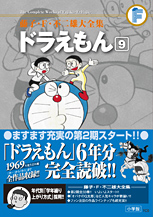

| |

＜1969年度生まれの
学年誌掲載集＞
定価：本体1,800円＋税
A5判／約720ページ
好評発売中！
| 第１期に引き続き、学年繰り上がり方式を採用。また、「のび太の結婚前夜」など、映画につながった名作も必見！ |
★は初めて単行本に収録される
作品です。
※収録内容は変更になる
場合があります。

|
ふんわりガス（小学一年生1976年4月号）
★ふしぎなじどうしゃ（小学一年生1976年5月号）
さかなつり（小学一年生1976年6月号）
とりよせつぼ（小学一年生1976年7月号）
空手ドリンク（小学一年生1976年8月号）
いっすんぼうし（小学一年生1976年9月号）
ミニたいふう（小学一年生1976年10月号）
キングコング（小学一年生1976年11月号）
弓やで学校へ（小学一年生1976年12月号）
かたづけラッカー（小学一年生1977年1月号）
ロボット雪だるま（小学一年生1977年2月号）
なぐられたってへっちゃらだい
（小学一年生1977年3月号）
時間貯金箱（小学二年生1977年4月号）
四次元ポケット（小学二年生1977年5月号）
ふみきりセット（小学二年生1977年6月号）
雲の中のプール（小学二年生1977年7月号）
ウルトラよろい（小学二年生1977年8月号）
あらかじめ日記はおそろしい
（小学二年生1977年9月号）
空想レンズ（小学二年生1977年10月号）
デラックスライト（小学二年生1977年11月号）
中身ポン（小学二年生1977年12月号）
紙工作が大あばれ
（小学二年生1977年12月号 別冊付録）
たからさがしカウンター（小学二年生1978年1月号）
クモノイトン（小学二年生1978年2月号）
モノモース（小学二年生1978年3月号）
百苦タイマー（小学三年生1978年4月号）
テレパスロボット（小学三年生1978年5月号）
のび太の部屋でロードショー
（小学三年生1978年6月号）
むりやりトレパン（小学三年生1978年7月号）
ひい木（小学三年生1978年8月号）
季節カンヅメ（小学三年生1978年9月号）
アスレチック・ハウス（小学三年生1978年10月号）
ありがたみわかり機（小学三年生1978年11月号）
百万ボルトひとみ（小学三年生1978年12月号）
実物立体日光写真（小学三年生1979年1月号）
初日の出セット（小学三年生1979年2月号）
空気ブロックせいぞう機（小学三年生1979年3月号）
だいこんダンスパーティー
（小学四年生1979年4月号）
お金がわいて出た話（小学四年生1979年5月号）
きりかえ式タイムスコープ
（小学四年生1979年6月号） |
未来の町にただ一人（小学四年生1979年7月号）
チッポケット二次元カメラ
（小学四年生1979年8月号）
お化けツヅラ（小学四年生1979年9月号）
税金鳥（小学四年生1979年10月号）
超大作特撮映画「宇宙大魔神」
（小学四年生1979年11月号）
ドラキュラセット（小学四年生1979年12月号）
雪アダプターいろいろあるよ
（小学四年生1980年1月号）
万能グラス（小学四年生1980年2月号）
材質変換機（小学四年生1980年3月号）
ガンファイターのび太（小学五年生1980年4月号）
ココロチョコ（小学五年生1980年5月号）
宝星（小学五年生1980年6月号）
どっちがウソか！ アワセール
（小学五年生1980年7月号）
ユクスエカメラ（小学五年生1980年8月号）
ビョードーばくだん（小学五年生1980年9月号）
大人をしかる腕章（小学五年生1980年10月号）
すなおなロボットがほし〜い！
（小学五年生1980年11月号）
のび太救出決死探検隊（小学五年生1980年12月号）
地震なまず（小学五年生1981年1月号）
のび太のブラックホール（小学五年生1981年2月号）
人間カメラはそれなりに写る
（小学五年生1981年3月号）
虹谷ユメ子さん（小学六年生1981年4月号）
な、なんと!! のび太が百点とった!!
（小学六年生1981年5月号）
やどり木で楽しく家出（小学六年生1981年6月号）
昔はよかった（小学六年生1981年7月号）
のび太の結婚前夜（小学六年生1981年8月号）
神さまロボットに愛の手を！
（小学六年生1981年9月号）
のび太の調教師（小学六年生1981年10月号）
つばめののび太（小学六年生1981年11月号）
サカユメンでいい夢みよう
（小学六年生1981年12月号）
「チャンスカメラ」で特ダネ写真を…
（小学六年生1982年1月号）
コピー頭脳でラクしよう（小学六年生1982年2月号）
しあわせトランプの恐怖（小学六年生1982年3月号） |